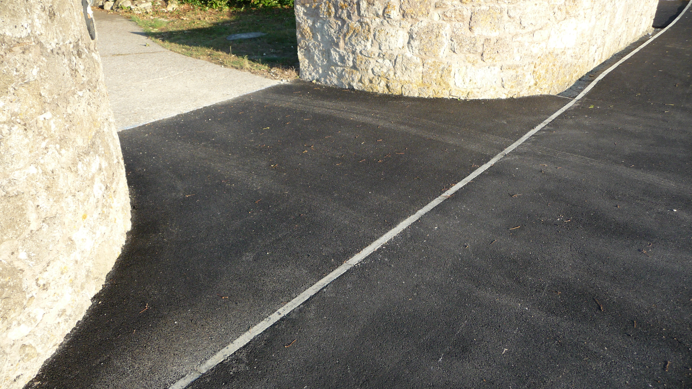
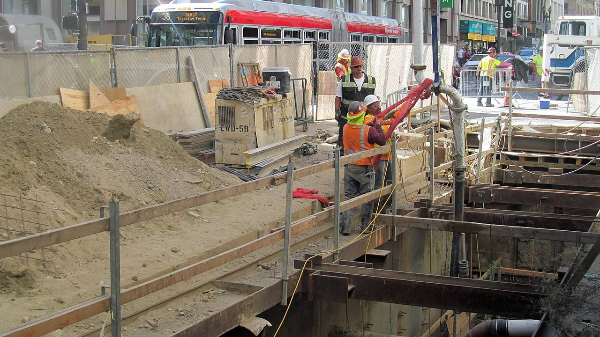
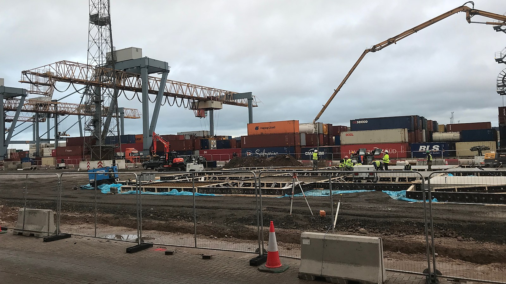
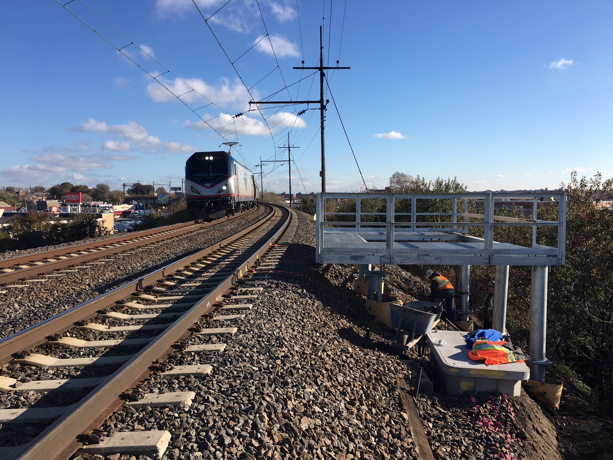

Slabs & suspended work
Ground slabs, raft and suspended slabs with the reinforcement chaired to the specified cover — not laid on the ground and poured over.

Structural slabs, footings, civil concrete and residential driveways across Lake Macquarie and the Hunter. Set out, formed and poured by the crew that quoted it — with the plant to place it in one run.
Commercial and civil work runs on the drawing; residential work runs on the site. Both get set out properly before a form is fixed.
Ground slabs, raft and suspended slabs with the reinforcement chaired to the specified cover — not laid on the ground and poured over.
Strip and pad footings, bored piers and pile caps built to the engineer's detail, with the reinforcement inspected before the pour.
Kerb, gutters, crossovers, hardstands and aprons — levels and finishes to spec, because civil work gets signed off against a drawing.
Retaining walls, seawall repairs and structures near the water, detailed for drainage and built with the exposure in mind.
Driveways, paths and outdoor slabs finished broom, trowel or exposed — set out to the fall so water leaves the building.
Cracked, sunken or failed concrete broken out, the base re-compacted and the slab replaced rather than patched over.
Concrete does not allow a second attempt at the set-out. Every stage below is signed off before the next one starts.
Benchmarks taken, falls calculated and the outline marked against the drawing or the existing ground. Access and pump position decided here, not on the morning.
Strip to depth, proof-roll the subgrade and compact in layers. Soft spots get dug out — a slab over a soft patch cracks no matter how good the concrete is.
Formwork to the finished level, mesh and bar chaired to cover, joints and penetrations set. Reinforcement is checked before the pour starts.
Placed by chute or pump, vibrated, screeded and finished while it is workable. Large areas are sequenced so the finish is consistent across the whole slab.
Control cuts at the correct spacing, curing compound or wet cure as specified, and a walk-through with the cure times written down.

A slab poured in sections has joints where the sections meet. Where the job allows, it is placed in a single run with a pump — fewer cold joints, one finish, and a surface that reads the same across the whole area.
Structural, civil and residential concrete — photographed as the work was placed and finished.


Local to the lake, working across the Hunter. Ask if your site is not listed — civil work travels further than driveways.
Suburb, size, and whether it is a slab, footings, civil work or a driveway. Drawings or an engineer's detail help if you have them.
Lake Mac Concrete Constructions
Lake Macquarie NSW · 0481 270 278